OU Models
This vignette walks you through the basic streps of running an analysis in Blouch.
Setup
Here we load the R packages used to setup the data for blouch, make figures post-analysis, etc. This includes Rstan, the the R interface to Stan. If you have not used Rstan before, it needs to be set up as shown here: https://mc-stan.org/users/interfaces/rstan
rm(list=ls())
library(devtools)
#> Loading required package: usethis
#devtools::install_github("Mark-Grabowski/blouch")
library(blouch)
load_all()
#> ℹ Loading blouch
# Load necessary packages
library(ape)
library(slouch)
library(rstan)
#> Loading required package: StanHeaders
#>
#> rstan version 2.26.4 (Stan version 2.26.1)
#> For execution on a local, multicore CPU with excess RAM we recommend calling
#> options(mc.cores = parallel::detectCores()).
#> To avoid recompilation of unchanged Stan programs, we recommend calling
#> rstan_options(auto_write = TRUE)
#> For within-chain threading using `reduce_sum()` or `map_rect()` Stan functions,
#> change `threads_per_chain` option:
#> rstan_options(threads_per_chain = 1)
library(treeplyr)
#> Loading required package: dplyr
#>
#> Attaching package: 'dplyr'
#> The following objects are masked from 'package:stats':
#>
#> filter, lag
#> The following objects are masked from 'package:base':
#>
#> intersect, setdiff, setequal, union
#>
#> Attaching package: 'treeplyr'
#> The following object is masked from 'package:stats':
#>
#> reorder
library(ggplot2)
library(bridgesampling)
#For execution on a local, multicore CPU with excess RAM we recommend calling
#options(mc.cores = parallel::detectCores())
options(mc.cores = 2)
rstan_options(auto_write = TRUE)For the purposes of illustrating the software, we will use a dataset of ruminant brain and body sizes bundled with the Slouch package (Kopperud et al. 2020) and a corresponding phylogenetic tree (Toljagić et al. 2017). First, we will organize the brain and body data.
## Load the phylogenetic tree with annotation data
data(artiodactyla)
phy <- artiodactyla
## Load the neocortex dataset
data(neocortex)
## Plot the tree
plot(ladderize(phy), cex = 0.6)
Next we will use the treeplyr function make.treedata to combine the data and tree based on the “species” column, which has the taxa names. See https://github.com/uyedaj/treeplyr for more on this package.Then we will finlter the data so only individuals with both brain and body size, as well as the variance in brain and body size are included. Variance in these traits is considered measurement error, estimation error in species averages. Finally we mean scale the X data (here body mass) so that the average across species is 0.
ruminant.trdata <- make.treedata(phy, neocortex,name_column="species")
ruminant.trdata<-filter(ruminant.trdata,!(is.na(brain_mass_g_log_mean)) & !(is.na(body_mass_g_log_mean)))
ruminant.trdata<-filter(ruminant.trdata,!(is.na(brain_se_squared)) & !(is.na(body_se_squared)))
#ruminant.trdata #Full dataset
#Mean Scale
ruminant.trdata$dat$bodycentered<-ruminant.trdata$dat$body_mass_g_log_mean-mean(ruminant.trdata$dat$body_mass_g_log_mean)Rescale Tree
Next, we rescale Tree to Height = 1
l.tree<-max(branching.times(ruminant.trdata$phy))
ruminant.trdata$phy$edge.length<-ruminant.trdata$phy$edge.length/l.tree ## rescale tree to height 1
max(branching.times(ruminant.trdata$phy))
#> [1] 1Running Blouch Data Setup Function
Here we are finally setting up our dataset to run in Blouch, using the blouchOU.setup.v1() function. This function takes out data formatted by treeplyr, and the names of our traits of interest in the order shown. The list produced by this function has data formatted to run both the direct effect (constraint) models and adaptative models. See Grabowski et al. (2016) for more on both of these models. Here the first trait is adapting towards the second.
#names.traits<-c("brain_mass_g_log_mean","bodycentered","NA","NA") #With ME
names.traits<-c("brain_mass_g_log_mean","bodycentered","brain_se_squared","body_se_squared") #With ME
#Data must be logged before entry into blouch.setup
#names.traits = c(response, predictor, me.response, me.predictor) - classical = 0 for inverse regression
stan_data<-blouchOU.setup.v1(ruminant.trdata,names.traits)
stan_constraint_data<-stan_data[[1]]
stan_adaptive_data<-stan_data[[2]]Explore Priors: Slope and intercept
Priors must be set manually in the Stan Blouch code (e.g. blouchOU_v1.stan). This is not a big deal, but we have to explore how our data leads to weak or stong prors beforehand. Do not use the default priors of Blouch as these are only appropriate for a smaller range of datasets.
First lets look at how our priors for the intercept and slope look given the dispersion of the data. Blouch is setup to use the OLS slope and intercept as the mean parameter values of the normal distribution as a prior, so here we just want to figure out the most appropriate standard deviation of the slope and intercept terms.
Here we are using the OLS intercept and slope for the regression of brain on body for our dataset as the mean prior values, but we should look at how our standard deviation (0.5 and 1.0 below) affects the region explored by Blouch.
library(ggsci)
library(ggplot2)
intercept_test<-rnorm(100,stan_adaptive_data$ols_intercept,0.5)
#slope_test<-rnorm(100,ols.slope,0.5)
slope_test<-rnorm(100,stan_adaptive_data$ols_slope,1.0)
slope.prior.plot<-ggplot(data=ruminant.trdata$dat,aes(y=brain_mass_g_log_mean,x=bodycentered))+
geom_point()+
geom_abline(intercept=intercept_test,slope=slope_test,alpha=0.25)+
theme_bw()+
ggtitle("Priors for Intercept and Slope")+
ylab("log Neocortex Area (mm2)") + xlab("log Brain Mass (g)")+
scale_color_npg()
slope.prior.plot
This first prior is far two wide, so let’s use a stronger prior (0.5 and 0.4 below).
intercept_test<-rnorm(100,stan_adaptive_data$ols_intercept,0.5)
#slope_test<-rnorm(100,ols.slope,0.5)
slope_test<-rnorm(100,stan_adaptive_data$ols_slope,0.4)
slope.prior.plot<-ggplot(data=ruminant.trdata$dat,aes(y=brain_mass_g_log_mean,x=bodycentered))+
geom_point()+
geom_abline(intercept=intercept_test,slope=slope_test,alpha=0.25)+
theme_bw()+
ggtitle("Priors for Intercept and Slope")+
ylab("log Neocortex Area (mm2)") + xlab("log Brain Mass (g)")+
scale_color_npg()
slope.prior.plot This looks pretty good. To enter these priors in Blouch, we would open the Blouch Stan code (e.g. blouchOU_v1.stan) and change the Priors code within the model block. Below we have set the intercept (alpha) and slope (beta) to have the best priors found above.
This looks pretty good. To enter these priors in Blouch, we would open the Blouch Stan code (e.g. blouchOU_v1.stan) and change the Priors code within the model block. Below we have set the intercept (alpha) and slope (beta) to have the best priors found above.
Explore Priors: Half-life
Since our tree is scaled to unit length = 1, and the original phylogeny is ~27 Ma, we would like our half-life prior to be allow for very quick adaptation (e.g < 1 Ma, which equals < 0.04 in tree units), and very slow adaptation (e.g. > 27 Ma, which equals 1 in tree units). Thus, we will the 10% quantile of the distrubution at 0.04 and 90% at 1.
We can explore how changing our parameters on the priors affect half-life using the code below. The values 1.25 and 1.25 for these two parameters are sufficient for this example analysis, but given your own data all parameters should be explored and the best values determined.
###########################################
#Log-normal prior for half-life - based on alpha
par.alpha <- list(meanlog=1.25, sdlog=1.25)
samp <- rlnorm(10000, mean=par.alpha$meanlog, sd=par.alpha$sdlog)
samp<-samp[samp>=0]
hist(samp, breaks=10000, main="Prior density of alpha",xlim=c(0,3))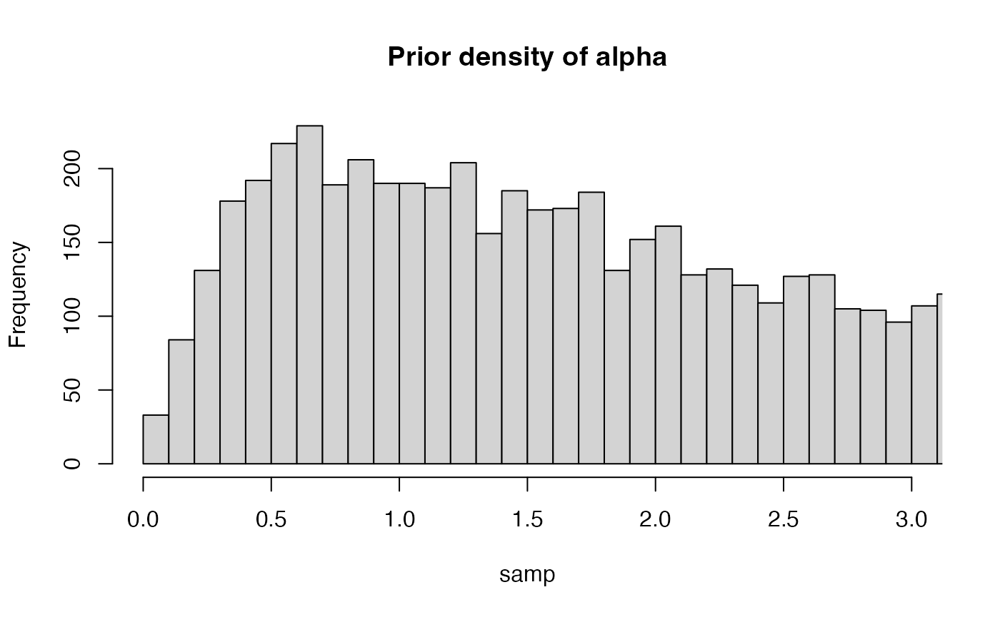
#abline(v=(c(log(2)/0.07142857,log(2)/1)), col="red", lwd=2, lty=2) #Lines for 1 Ma and length of tree (14 Ma) -
min(samp)
#> [1] 0.03944943
max(samp)
#> [1] 334.772
log(2)/min(samp)
#> [1] 17.57052
log(2)/max(samp)
#> [1] 0.002070505
quantiles <- c(0, 0.01, 0.025,0.10, 0.25, 0.5, 0.75,0.90,0.95, 0.975, 0.99, 1)
#hls <- rlnorm(10000, meanlog=log(2)/par.alpha$meanlog, sdlog=log(2)/par.alpha$sdlog)
#hls<-hls[hls>=0]
qs <- quantile(log(2)/samp, quantiles) ## Use 'alfs' and math to calculate the quantiles of phylogenetic half-life
round(qs, 2)
#> 0% 1% 2.5% 10% 25% 50% 75% 90% 95% 97.5% 99% 100%
#> 0.00 0.01 0.02 0.04 0.09 0.20 0.46 1.01 1.54 2.37 3.80 17.57
hist((log(2)/samp), breaks=10000, main="Prior density of half-life",xlim=c(0,3))
abline(v=(c(0.04,1)), col="red", lwd=2, lty=2) #Lines for 1 Ma and length of tree (27 Ma) - 
########################################This looks pretty good. Again to enter these priors, we would open the Blouch Stan code and change the Priors code within the model block. Below we have set the priors on a, log mean and log sd to
Priors Block
//Priors a ~ lognormal(1.0,1.0); //a = log(2)/half-life //sigma2_y ~ exponential(0.1); // alpha ~ normal(ols_intercept,0.5); //Intercept beta ~ normal(ols_slope, 0.4); //Slope
The other parameter we have to set is the sigma2_y parameter, but in the default case it is simply a uniform distribution with a lower limt of 0 and an upper limit equal to 4 times the variance of Y. In Stan, uniform priors are defined in the parmeters block and given their limits in this block:
parameters { real <lower = 0> a; real <lower = 0, upper = variance(Y)*4> sigma2_y; //Added to limit the variance real alpha; //OU alpha vector[Z] beta; //OU beta
In the Priors code within the model block, they are then not given a prior distribution. //Priors a ~ lognormal(1.0,1.0); //a = log(2)/half-life //sigma2_y ~ exponential(0.1); // alpha ~ normal(ols_intercept,0.5); //Intercept beta ~ normal(ols_slope, 0.4); //Slope
If we wanted to explore how sigma2_y prior compares to our expectations we could use the code below, but for the example we will use a uniform prior as discussed above.
library(extraDistr)
###########################################
#Normal - based on alpha
par.sigma2y <- list(sigma=0.1)
samp <- rhcauchy(10000, sigma=par.sigma2y$sigma)
hist(samp, breaks=10000, main="Prior density of Sigma2y",xlim=c(0,3))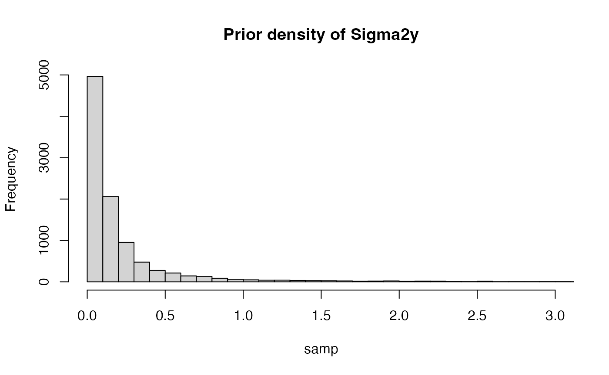
#abline(v=(c(log(2)/0.07142857,log(2)/1)), col="red", lwd=2, lty=2) #Lines for 1 Ma and length of tree (14 Ma) -
min(samp)
#> [1] 3.615097e-05
max(samp)
#> [1] 525.4153
log(2)/min(samp)
#> [1] 19173.68
log(2)/max(samp)
#> [1] 0.001319237
quantiles <- c(0, 0.01, 0.025,0.10, 0.25, 0.5, 0.75, 0.90, 0.975, 0.99, 1)
#hls <- rlnorm(10000, meanlog=log(2)/par.alpha$meanlog, sdlog=log(2)/par.alpha$sdlog)
#hls<-hls[hls>=0]
qs <- quantile(samp, quantiles) ## Use 'alfs' and math to calculate the quantiles of phylogenetic half-life
round(qs, 2)
#> 0% 1% 2.5% 10% 25% 50% 75% 90% 97.5% 99% 100%
#> 0.00 0.00 0.00 0.02 0.04 0.10 0.24 0.65 2.30 5.66 525.42
hist(samp/(2*2), breaks=10000, main="Prior density of Vy",xlim=c(0,3))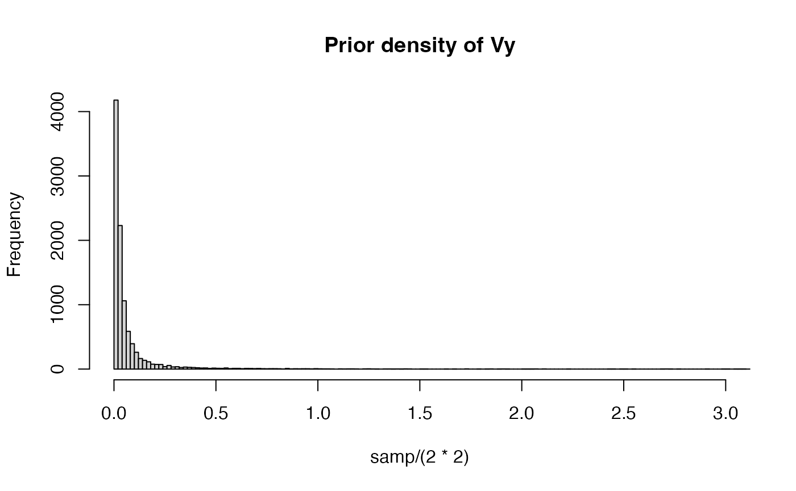
#abline(v=(c(0.07142857,1)), col="red", lwd=2, lty=2) #Lines for 1 Ma and length of tree (14 Ma) -
########################################Direct Effect Models
Now that we have formatted our data and supplied reasonable priors for the various distributions, we can now run Blouch.
Now lets do a simple analysis. Blouch implements the model of constrained evolution (Hansen & Bartoszek, 2012) known as the direct effect model, previously implemented in Grabowski et al. (2016), which can be used to test for allometric constraints.
Here we run this model using 2 chains and 4000 iterations per chain. This code follows standard Stan/Rstan code.
fit.direct<- rstan::sampling(stanmodels$blouchOU_v1,data = stan_constraint_data,chains = 2,iter = 4000,control=list(adapt_delta=0.95),show_messages=FALSE)Stan prints out a lot of info, so lets just look at the parameter estimates here and store the most important stuff for later.
#Lets look at the parameter estimates
print(fit.direct,pars = c("a","hl","alpha","beta","vy","r_squared","sigma2_y"))
#> Inference for Stan model: blouchOU_v1.
#> 2 chains, each with iter=4000; warmup=2000; thin=1;
#> post-warmup draws per chain=2000, total post-warmup draws=4000.
#>
#> mean se_mean sd 2.5% 25% 50% 75% 97.5% n_eff Rhat
#> a 5.81 0.29 8.31 0.42 1.49 2.90 6.52 30.20 832 1
#> hl 0.39 0.01 0.54 0.02 0.11 0.24 0.47 1.66 1799 1
#> alpha 5.05 0.00 0.04 4.97 5.03 5.05 5.08 5.13 1846 1
#> beta[1] 0.57 0.00 0.02 0.53 0.56 0.57 0.58 0.61 2034 1
#> vy 0.02 0.00 0.01 0.01 0.01 0.01 0.02 0.05 2388 1
#> r_squared 0.96 0.00 0.00 0.95 0.96 0.96 0.96 0.97 1114 1
#> sigma2_y 0.16 0.01 0.23 0.02 0.05 0.08 0.17 0.84 774 1
#>
#> Samples were drawn using NUTS(diag_e) at Sat Dec 11 23:07:27 2021.
#> For each parameter, n_eff is a crude measure of effective sample size,
#> and Rhat is the potential scale reduction factor on split chains (at
#> convergence, Rhat=1).
#For downstream analysis and plots
ext.fit.direct <- rstan::extract(fit.direct)Blouch follows the same format of parameter estimate presentation as Slouch - see Hansen et al. (2008), Grabowski et al. (2016), and Kopperud et al. (2020) for more explanation.
Trace and Density Plots for estimated parameters
We can look at how our procedures using the standard trace and density plots from Rstan
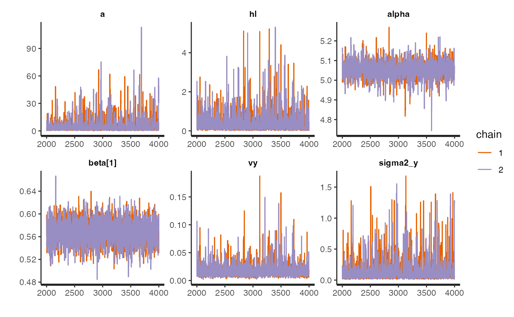
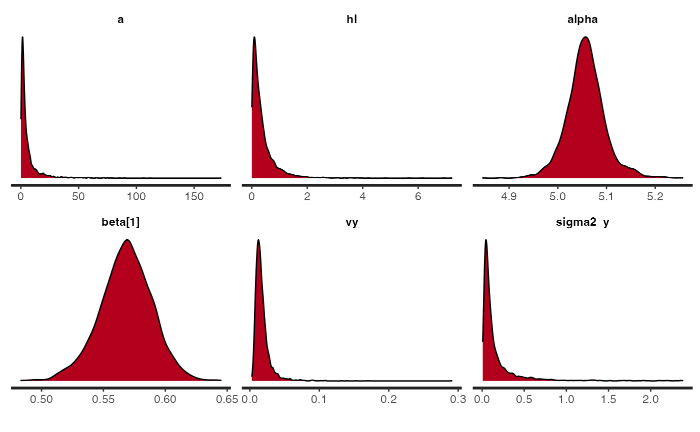
#3X8These look good.
Adaptive Model
Blouch also implements the model of adaptive evolution introduced by Hansen et al. (2008). Here the response variable evolves according to an Ornstein-Uhlenbeck process towards an optimal state that is modeled as a function of the predictor variable.
Here the code is mostly the same, but the data type sent to Stan is a different format from the stan_constraint_data above.
fit.adaptive<- rstan::sampling(stanmodels$blouchOU_v1,data = stan_adaptive_data,chains = 2,iter = 4000,control=list(adapt_delta=0.95),show_messages=FALSE)Again, lets look at the parameter estimates
print(fit.adaptive,pars = c("a","hl","alpha","beta","beta_evol","vy","r_squared","sigma2_y"))
#> Inference for Stan model: blouchOU_v1.
#> 2 chains, each with iter=4000; warmup=2000; thin=1;
#> post-warmup draws per chain=2000, total post-warmup draws=4000.
#>
#> mean se_mean sd 2.5% 25% 50% 75% 97.5% n_eff Rhat
#> a 41.89 0.51 22.01 14.90 26.51 36.44 51.13 100.13 1883 1
#> hl 0.02 0.00 0.01 0.01 0.01 0.02 0.03 0.05 2242 1
#> alpha 5.06 0.00 0.03 4.99 5.04 5.06 5.08 5.12 2793 1
#> beta[1] 0.59 0.00 0.02 0.55 0.57 0.58 0.60 0.63 2739 1
#> beta_evol[1] 5.06 0.00 0.00 5.05 5.06 5.06 5.06 5.06 3945 1
#> beta_evol[2] 0.57 0.00 0.00 0.57 0.57 0.57 0.57 0.57 2820 1
#> vy 0.01 0.00 0.00 0.00 0.00 0.00 0.01 0.02 3377 1
#> r_squared 0.96 0.00 0.00 0.95 0.96 0.96 0.96 0.97 1576 1
#> sigma2_y 0.46 0.01 0.48 0.01 0.11 0.29 0.63 1.87 1900 1
#>
#> Samples were drawn using NUTS(diag_e) at Sat Dec 11 23:12:28 2021.
#> For each parameter, n_eff is a crude measure of effective sample size,
#> and Rhat is the potential scale reduction factor on split chains (at
#> convergence, Rhat=1).
#For downstream analysis and plots
ext.fit.adaptive <- rstan::extract(fit.adaptive)And explore the trance and density plots
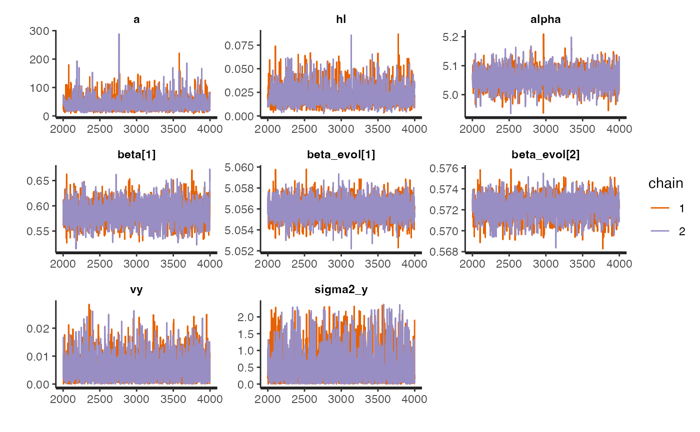
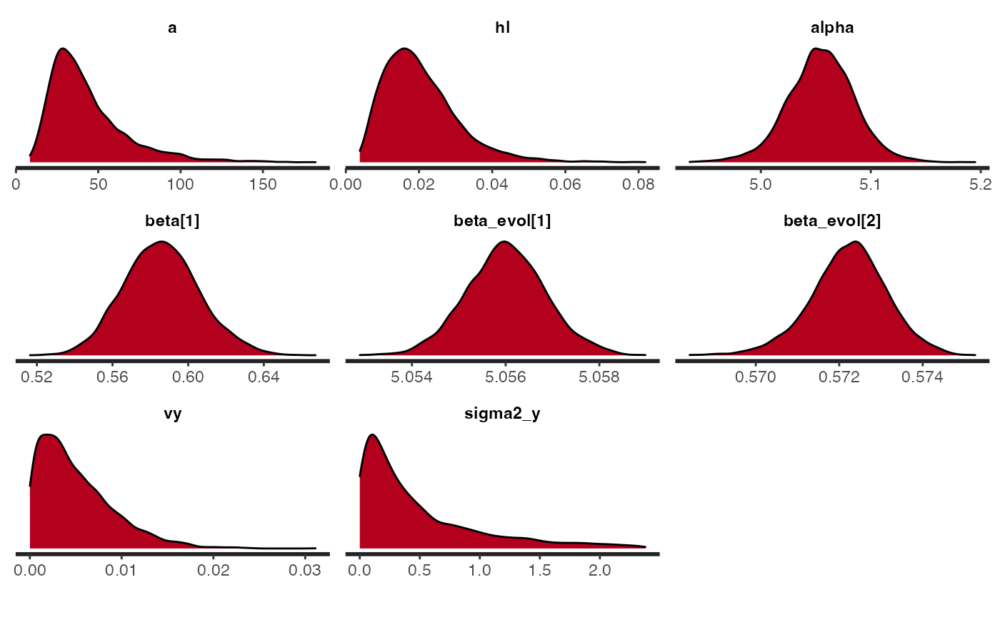
#3X8Model Comparison using Bayes Factors
While using a Direct Effect or Adaptive model should be driven by the biological hypotheses being tested, it is simple to compare between different models using Bayes Factors. Here we use the bridgesampling R package (CITATION).
lml.fit.direct<-bridge_sampler(fit.direct,silent=TRUE)
lml.fit.adaptive<-bridge_sampler(fit.adaptive,silent=TRUE)
BF_att <- bridgesampling::bf(lml.fit.direct, lml.fit.adaptive)
BF_att
#> Estimated Bayes factor in favor of lml.fit.direct over lml.fit.adaptive: 32.66002We find that the data is 5.2 more likely under a model that assumes a direct effect model rather than af adaptive model.
Brownian Model
Blouch can also fit a Brownian motion model to the data, which can then be compared to the other models using Bayes Factors. Note that while this is possible with Blouch, it is assuming your data follows this model of evolution, rather than testing for it using the Direct Effect or Adaptive models above. Here we again use the stan_constraint_data type but a new Stan function. Note that priors on the intercept and slope should be set as previously, but sigma2_y no longer has an upper range of values in its declaration.
fit.BM<- rstan::sampling(stanmodels$blouchBM_v1,data = stan_constraint_data,chains = 2,iter = 4000,control=list(adapt_delta=0.95),show_messages=FALSE)
print(fit.BM,pars = c("alpha","beta","r_squared","sigma2_y"))
#> Inference for Stan model: blouchBM_v1.
#> 2 chains, each with iter=4000; warmup=2000; thin=1;
#> post-warmup draws per chain=2000, total post-warmup draws=4000.
#>
#> mean se_mean sd 2.5% 25% 50% 75% 97.5% n_eff Rhat
#> alpha 5.05 0 0.08 4.89 5.00 5.05 5.10 5.21 3148 1
#> beta[1] 0.56 0 0.02 0.51 0.54 0.56 0.57 0.60 3300 1
#> r_squared 0.99 0 0.01 0.97 0.99 0.99 0.99 0.99 2457 1
#> sigma2_y 0.03 0 0.01 0.01 0.02 0.02 0.03 0.05 2756 1
#>
#> Samples were drawn using NUTS(diag_e) at Sat Dec 11 23:15:19 2021.
#> For each parameter, n_eff is a crude measure of effective sample size,
#> and Rhat is the potential scale reduction factor on split chains (at
#> convergence, Rhat=1).
#For downstream analysis and plots
ext.fit.BM <- rstan::extract(fit.BM)And explore the trance and density plots
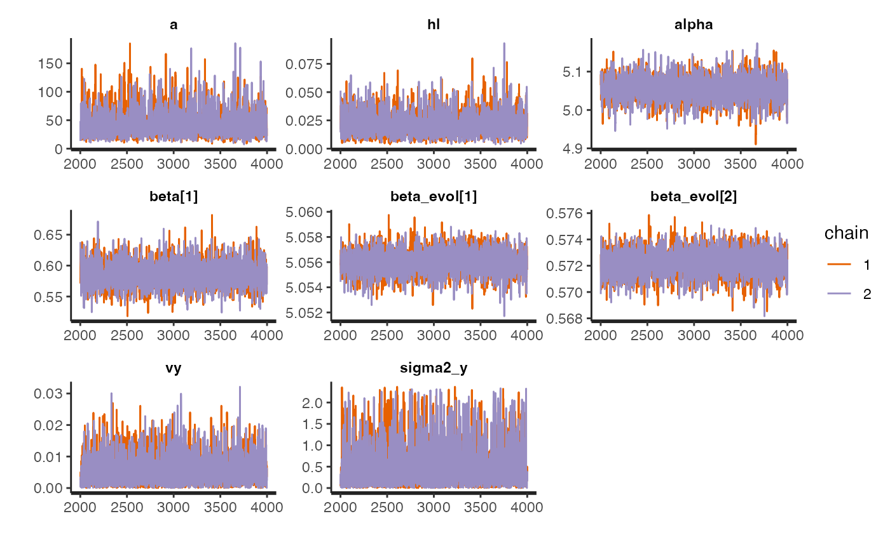
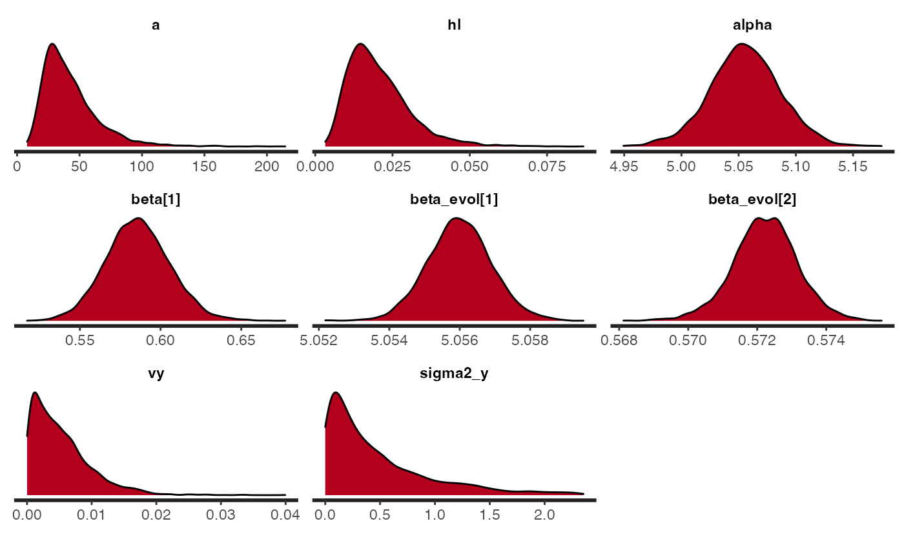
#3X8Looking Good!
Direct vs. BM Model Comparison using BF
library(bridgesampling)
lml.fit.direct<-bridge_sampler(fit.direct,silent=TRUE)
lml.fit.BM<-bridge_sampler(fit.BM,silent=TRUE)
BF_att <- bridgesampling::bf(lml.fit.direct, lml.fit.BM)
BF_att
#> Estimated Bayes factor in favor of lml.fit.direct over lml.fit.BM: 1.29189Here the direct fit model has a Bayes Factor of 0.7 over the BM model, which makes sense for this data as the estimated phylogenetic half life is quite long, 65% the length of the phylogeny.
Direct Effect Plot
ggplot(data=ruminant.trdata$dat,aes(y=brain_mass_g_log_mean,x=bodycentered))+
#geom_abline(intercept=intercept_test,slope=slope_test,alpha=0.25)+
geom_abline(intercept=mean(ext.fit.direct$alpha),slope = mean(ext.fit.direct$beta[,1]),lty=1)+
geom_point(size=2.0,alpha=0.8)+
theme_bw()+
theme(legend.position="bottom")+
ggtitle("Direct Effect Model")+
ylab("log Brain Mass (g)") + xlab("log Body Mass (g)")+
scale_color_npg()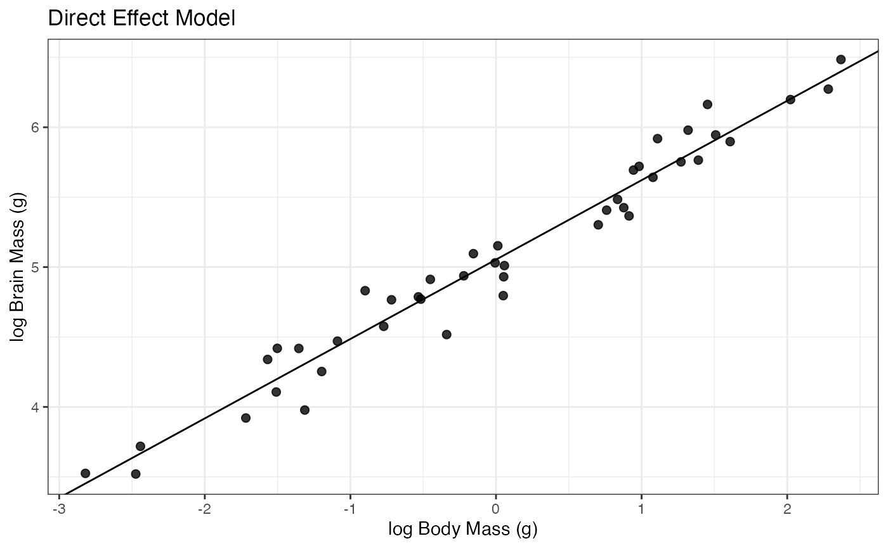
Adaptive Plot
ggplot(data=ruminant.trdata$dat,aes(y=brain_mass_g_log_mean,x=bodycentered))+
#geom_abline(intercept=intercept_test,slope=slope_test,alpha=0.25)+
geom_abline(intercept=mean(ext.fit.adaptive$alpha),slope = mean(ext.fit.adaptive$beta[,1]),lty=1)+
geom_abline(intercept=mean(ext.fit.adaptive$alpha),slope = mean(ext.fit.adaptive$beta_evol[,2]),lty=2)+
geom_point(size=2.0,alpha=0.8)+
theme_bw()+
theme(legend.position="bottom")+
ggtitle("Adaptive Model")+
ylab("log Brain Mass (g)") + xlab("log Body Mass (g)")+
scale_color_npg()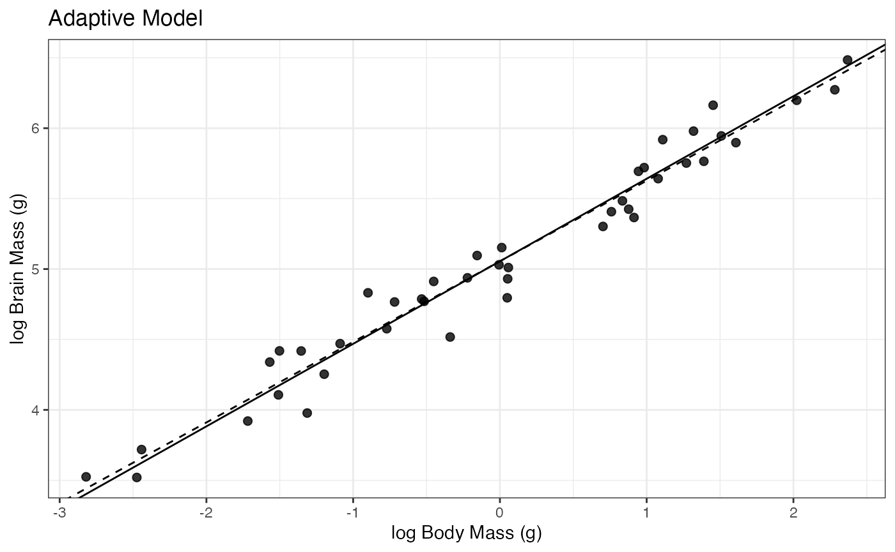